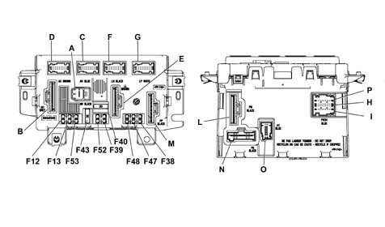
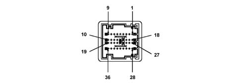
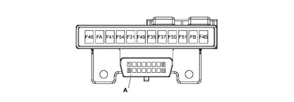
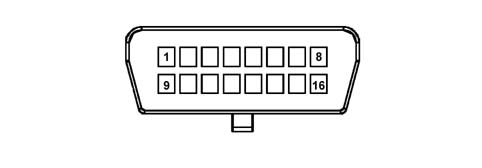
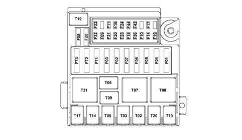

5505A multi-function components
- Path
- Descriptions > 55 ELECTRICAL EQUIPMENT > 5505 ELECTRICAL CIRCUIT FOR INSTRUMENTS/INDICATORS > 5505A multi-function components
- Kind
- system description
- Applies to
- all engines; all production periods
- Interactive page
- https://sloeber94.github.io/elrnDB-fPnd/en/#/2750957
Applies to: all engines; all production periods
SPECIFICATIONS
The Facia Node (NPL) is an electronic component with relays and fuses connected to the vehicle serial networks which manages the basic functions of the N.I.C.E. structure.
The NPL also ensures the interfaces for the RF aerials and the immobilizer.
The NPL also acts as a connection between front and rear facia wiring. The connectors for front and rear wiring and accessible from the front (fuse side) while the connectors for the facia wiring are located on both sides.
The NPL is housed under the dashboard near the steering column, in a central position in relation to the functions that it manages.
Applies to: all engines; all production periods
GENERAL FUNCTIONS OF THE FACIA NODE
The NPL performs the following functions:
- It receives and sends information on the B - CAN network (e.g.: fault diagnosis, warning lights, commands, data)
- It receives and sends information on the C - CAN network
- It interconnects with the dashboard, front and rear wiring
We find the following functions:
- management of the centre front courtesy light with timed switching off and dimming
- management of internal relay on/off: heated rear window, low beams, windscreen wiper power supply/speed selection, rear window power supply, two-way pump, horn turn signa/hazard warning light, door lock, boot release, driver side electric window, passenger side electric window
- management of on-off via solid state actuators for: r/l turn signals, number plate lights, contro lightin, left rear fog lamp, interor lighting power supply, front courtesy light
- on/off output management directly at the loads and lights check function: front side lights (left and right) and rear side lights (left and right), front direction indicators (left and right), rear direction indicators (left and right), and side repeaters (left and right), number plate lights (left and right), brake lights (left and right), left rear fog lamp;
- management of on/off outlets directly at loads: hazard warning light LED;
- repetition of the vehicle speed signal
- management of the SBMT driver (management strategy for load disactivation at key-off)
- management of the recovery serial line to the engine management control unit (immobilizer)
- management of the serial line for the tilt sensor, rain sensor.
- master for the entire system;
- fault diagnosis of the entire system: collection of diagnostic information, management of the fault diagnosis using the EXAMINER.
- immobilizer: management of the key code with possible engine immobilizing
- acquisition of on/off signals: dipped headlamp operation, main beam headlamp operation, boot lock opening control, boot locking function, handbrake control, hazard warning lights control, left rear fog lamps control, fog lights relay feed, left direction indicators control, right direction indicators control, parking lights control, side lights control, city control, steering column switch unit control, headlamp washer control, FPS control (inertia switch), brake fluid level, reverse gear engaged;
- acquisition of analogue signals: fuel level, alternator voltage (D+), battery voltage, brake lights fuse status recognition, centre courtesy light control, brake lights control
- acquisition of vehicle speed signal
- acquisition of lock sensors from door, boot, bonnet
- follow-me function management
- acquisition of input from alarm signal and control of external modules via A-bus line
- download of electric window control
- download of tyre status from A-bus line

A - M001A 1 PIN Connector B - M001B(10 way) connector - grey C - M001C (18 way) connector - blue D - M001D (18 way) connector - brown E - M001E (10 way) connector - brown F - M001F (18 way) connector - black G - M001G (18 way) connector - white M - M001M (8 way) connector - black L- M001L (12 way) connector - black P H I - M001P, M001H, M001I (9 + 18+9 way) connector - blue N - M001N (9 way) connector O - M001O (12 way) connector
Applies to: all engines; all production periods
FUSES PRESENT ON FACIA NODE (NPL)
The following table shows fuses present on the Facia Node
Fuse | Protection | In[A] |
|---|---|---|
F-12 | Right low beam fuse | 10 |
F-13 | Left low beam/CAF enablement (Headlamp Alignment Adjustment) | 10 |
F-38 | +30 fuse for door lock system | 20 |
F-39 | CAV fuse, tester output for EOBD, CSA, NRR, NCL, NQS, Phone, CPP | 10 |
F-40 | Heated rear window fuse | 30 |
F-43 | Windscreen wash/wipe fuse | 30 |
F-47 | Left front electric window INT A/T fuse | 20 |
F-48 | Right front electric window INT A/T fuse | 20 |
F-52 | Rear wiper fuse | 15 |
F-53 | Bidirecitional pump fuse | 15 |
Applies to: all engines; all production periods
FACIA NODE PIN OUT (NPL)
Connector M001A (1 way)
Conn. | Pin | Operation |
|---|---|---|
M001A | relay | +30 from F1 SCM |
Applies to: all engines; all production periods
FACIA NODE PIN OUT (NPL)
Connector M001B(10 way) grey
Conn. | Pin | Operation |
|---|---|---|
M001E | relay | N.C. |
M001E | relay | NPL power earth (door lock, wash/wipe, relay coil, drivers) |
M001E | 3 | Windscreen washer pump positive control |
M001E | 4 | Rear washer pump positive control |
M001E | 5 | Brake light power supply from switch on pedal unit |
M001E | 6 | Low beam enablement from F-13 for l/r headlamp alignment corrector |
M001E | 7 | Left dipped beam power supply from F-13 |
M001E | 8 | Right dipped beam power supply from F-12 |
M001E | 9 | Wiper speed 1A positive control |
M001E | 10 | Wiper speed 2A positive control |
Applies to: all engines; all production periods
FACIA NODE PIN OUT (NPL)
Connector M001C (18 way) blue
Conn. | Pin | Operation |
|---|---|---|
M001C | relay | Reversing light power supply from switch on gearbox |
M001C | relay | Horn relay control negative signal (connection to M001H9) |
M001C | 3 | B-CAN B for NCM |
M001C | 4 | B-CAN A for NCM |
M001C | 5 | K line for testing NCM connection with M001H 13) |
M001C | 6 | Alternator D+ signal |
M001C | 7 | Earth for speedometer pulse generator on gearbox (connection with M001L 2) |
M001C | 8 | Windscreen wiper cam signal |
M001C | 9 | INT/A for SCM/reversing switch (connection with M001L 7) |
M001C | 10 | Right front turn signal activation |
M001C | 11. | Left front turn signal activation |
M001C | 12. | B-CAN B for NGE |
M001C | 13 | B-CAN A for NGE |
M001C | 14 | Right front side light activation |
M001C | 15 | Left front side light activation |
M001C | 16 | Negative signal from low brake fluid indicator switch |
M001C | 17 | Main beam relay coil control negative signal |
M001C | 18 | Speedometer signal input (VSO) from speedometer pulse generator on gearbox (connection with M001D 18) |
Applies to: all engines; all production periods
FACIA NODE PIN OUT (NPL)
Connector M001D (18 way) brown
Conn. | Pin | Operation |
|---|---|---|
M001D | relay | d.s. front door open negative signal to NCR (connection with M001H 23) |
M001D | relay | Negative signal from bonnet open indicator switch (NC) |
M001D | 3 | K line for NCR (connection with M001H 22) |
M001D | 4 | K line for ABS (connection with M001 04) |
M001D | 5 | N.C. |
M001D | 6 | Headlamp washer relay coil control negative signal |
M001D | 7 | N.C. |
M001D | 8 | N.C. |
M001D | 9 | N.C. |
M001D | 10 | +30 from F-39 for antitheft siren |
M001D | 11. | C-CAN H to J.C. (only NPL c/gateway) |
M001D | 12. | C-CAN L to J.C. (only NPL c/gateway) |
M001D | 13 | ISO5 serial line interface for communication with immobilizer/ NCM (recovery, only NPL c/gateway) |
M001D | 14 | Bidirectional serial line for ABS |
M001D | 15 | A-bus serial line for CSA |
M001D | 16 | Fog lamp relay coil control negative signal |
M001D | 17 | Speedometer repeat signal for NCR |
M001D | 18 | VSO from ABS (connection to M001C 18) |
Applies to: all engines; all production periods
FACIA NODE PIN OUT (NPL)
Connector M001E (10 way) brown
Conn. | Pin | Operation |
|---|---|---|
M001E | relay | Heated rear window power supply from F-40 |
M001E | relay | Boot opening actuator positive control |
M001E | 3 | Rear wiper motor positive control |
M001E | 4 | +30 from F-39 for J.C. (CAV, CPP) |
M001E | 5 | RH and LH brake light power supply |
M001E | 6 | Supplementary brake light power source (connection with M001B5) |
M001E | 7 | Fixed lighting for cigaretter lighter controlled by side lights (connection with M001L 9) |
M001E | 8 | N.C. |
M001E | 9 | Rear door release motor reduction unit positive control |
M001E | 10 | Rear door lock motor reduction unit positive control |
Applies to: all engines; all production periods
FACIA NODE PIN OUT (NPL)
Conneector M001F (18 way) black
Conn. | Pin | Operation |
|---|---|---|
M001F | relay | Reversing light power supply (connection to M001C 1) |
M001F | relay | Fuel level signal from tank |
M001F | 3 | Negative signal from handbrake engaged indicator switch (NA) |
M001F | 4 | Fuel level signal from tank (negative) |
M001F | 5 | Left number plate light actuation (connection with M001F 14) |
M001F | 6 | Negative signal from rear wiper motor cam |
M001F | 7 | N.C. |
M001F | 8 | N.C. |
M001F | 9 | N.C. |
M001F | 10 | +30 SBMT for central courtesy light (connection with M001G 18) |
M001F | 11. | Left rear side light activation |
M001F | 12. | Right rear side light activation |
M001F | 13 | Rear fog lamp actuation |
M001F | 14 | Right number plate light actuation (connection with M001F 5) |
M001F | 15 | Left rear turn signal activation |
M001F | 16 | Operation of left side repeater |
M001F | 17 | Operation of right side repeater |
M001F | 18 | Right rear turn signal activation |
Applies to: all engines; all production periods
FACIA NODE PIN OUT (NPL)
Connector M001G (18 way) white
Conn. | Pin | Operation |
|---|---|---|
M001G | relay | Signal earth for CSP (connection with M001L 2) |
M001G | relay | A-bus serial line for CAV |
M001G | 3 | A-Bus serial line for CPP |
M001G | 4 | Negative signal from NA switch indicating right rear door open from switch on lock |
M001G | 5 | Negative signal from boot open indicator NA switch |
M001G | 6 | Reverse engaged signal for parking sensor (connection with M001C 1) |
M001G | 7 | Negative signal from switch |
M001G | 8 | Electric roof closure enablement negative signal |
M001G | 9 | Negative signal from switch |
M001G | 10 | Front courtesy light negative control (max 20W timer/dimmer) |
M001G | 11. | A-Bus serial line for CSP |
M001G | 12. | Negative signal from boot opening switch in exterior handle |
M001G | 13 | Negative signal from NA switch indicating boot not fully closed |
M001G | 14 | Negative signal from FPS NA |
M001G | 15 | Negative signal from NA left rear door open indication switch from switch on lock |
M001G | 16 | K line for rear area groupings (CPP); (connection with M001O 10) |
M001G | 17 | K line for rear area groupings (CPA); (connection with M001O 10) |
M001G | 18 | +30 SBMT for luggage compartment light (connection with M001F 10) |
Applies to: all engines; all production periods
FACIA NODE PIN OUT (NPL)
Connector M001M (8 way) black
Conn. | Pin | Operation |
|---|---|---|
M001M | relay | Power supply for l/r door mirror demister |
M001M | relay | p.s. front electric window motor (descending) |
M001M | 3 | p.s. front electric window motor (ascending) |
M001M | 4 | d.s. front electric window motor (ascending) |
M001M | 5 | d.s. front electric window motor (descending) |
M001M | 6 | Front door release motor positive command |
M001M | 7 | Front door lock motor positive command |
M001M | 8 | N.C. |
Applies to: all engines; all production periods
FACIA NODE PIN OUT (NPL)
Connector M001L (12 way) black
Conn. | Pin | Operation |
|---|---|---|
M001L | relay | INT from F-51 SCA |
M001L | relay | NPL electronic earth (ref. analogue signals, micro) |
M001L | 3 | +30 for testing from F-39 |
M001L | 4 | +30 from F-39 for NRR |
M001L | 5 | +30 from F-39 for radio phone wiring |
M001L | 6 | +30 from F-39 for opt on facia cable (NCL) |
M001L | 7 | I NT/A from F-31 SCA |
M001L | 8 | Power earth for tester |
M001L | 9 | Fixed lighting for J.C. controlled by side lights |
M001L | 10 | NA engine bar signal (lock) Front door p.s. (connection with M001H12) |
M001L | 11. | NC engine bar signal (release) Front door p.s. (connection with M001H 13) |
M001L | 12. | Parking light control positive signal from ignition switch |
Applies to: all engines; all production periods
FACIA NODE PIN OUT (NPL)
Connector M001P, M001H, M001I (9 + 18+9 way) blue
Conn. | Pin | Operation |
|---|---|---|
M001P | relay | N.C. |
M001P | relay | Steering wheel stalk unit earth (connection with M001L 2) |
M001P | 3 | Hazard warning light on led positive command |
M001P | 4 | Hazard warning light control negative signal |
M001P | 5 | Low beam/flasher control negative signal |
M001P | 6 | Low beam control negative signal |
M001P | 7 | Side light control negative signal |
M001P | 8 | Left hand turn signal/parking light command negative signal |
M001P | 9 | Right hand turn signal/parking light command negative signal |
M001H | 10 | Immobilizer aerial |
M001H | 11. | B CAN B for tester output |
M001H | 12. | NA engine bar signal (lock) Front door d.s. |
M001H | 13 | NC engine bar signal (release) Front door d.s. |
M001H | 14 | Negative signal from d.s. electric window switch (raise) |
M001H | 15 | Negative signal from p.s. electric window switch (raise) |
M001H | 16 | INT A/T relay coil command positive signal |
M001H | 17 | Signal earth for tester output |
M001H | 18 | Horn relay control negative signal from stalk unit |
M001H | 19 | Immobilizer aerial |
M001H | 20 | B CAN A for tester input |
M001H | 21 | Negative signal from NA switch indicating p.s. open from switch on lock |
M001H | 22 | K line for tester output (NCM, NCR) |
M001H | 23 | Negative signal from NA switch indicating p.s. door open from switch on lock |
M001H | 24 | Negative signal from d.s. electric window switch (lower) |
M001H | 25 | Negative signal from p.s. electric window switch (lower) |
M001H | 26 | Negative signal from City function pushbutton |
M001H | 27 | N.C. |
M001I | 28 | Steering wheel stalk unit earth (windscreen wiper stalk) |
M001I | 29 | Negative signal controlling intermittent rear wiper function |
M001I | 30 | Negative signal controlling 2A windscreen wiper speed/antipanic function |
M001I | 31 | Negative signal controlling 1A windscreen wiper speed |
M001I | 32 | Windscreen wiper intermittent control negative signal |
M001I | 33 | Rear washer pump control negative signal |
M001I | 34 | Windscreen/headlamp washer pump control negative signal |
M001I | 35 | B-CAN A for NQS |
M001I | 36 | B-CAN B for NQS |

Applies to: all engines; all production periods
FACIA NODE PIN OUT (NPL)
Connector M001N (9 way)
Conn. | Pin | Operation |
|---|---|---|
M001N | relay | +30 from F-39 for NQS |
M001N | relay | +high beam from F-13 for NQS |
M001N | 3 | INTI for NQS (connection withM001L 1) |
M001N | 4 | Signal earth for NQS (connection withM001L 2) |
M001N | 5 | Control panel earth |
M001N | 6 | Negative signal from heated rear window control button |
M001N | 7 | Negative signal form rear fog lamp control pushbutton |
M001N | 8 | N.C. |
M001N | 9 | N.C. |
Applies to: all engines; all production periods
FACIA NODE PIN OUT (NPL)
Connector M001O (12 way)
Conn. | Pin | Operation |
|---|---|---|
M001O | relay | B-CAN B for facia cable opt (connection with M001O 3) |
M001O | relay | B-CAN B for NRR |
M001O | 3 | B-CAN B for NCL |
M001O | 4 | K line for tester output (ABS) |
M001O | 5 | Speedometer signal repeater for NIT |
M001O | 6 | Deterrent led positive command |
M001O | 7 | B-CAN A for NRR |
M001O | 8 | B-CAN A for NCL |
M001O | 9 | B-CAN A for facia cable opt (connection with M001O 8) |
M001O | 10 | K line for tester output (CPP) |
M001O | 11. | Negative signal from fog lamp control pushbutton |
M001O | 12. | N.C. |
Applies to: all engines; all production periods
SPECIFICATIONS
The Passenger Compartment Wiring Box is built into the facia wiring and is located near the Facia Node; this control unit includes an EOBD tester output.

A - EOBD tester output
Applies to: all engines; all production periods
SPECIFICATIONS
The Passenger Compartment Wiring Box protects the electrical equipment by means of the following fuses:
Fuse | Protection | In[A] |
|---|---|---|
F-31 | Fuse INT/A reversing lights, SCM (Engine Wiring Box) relay coil, NPL, NCL | 5 |
F-35 | Fuse +15 NRR, PCC | 7.5 |
F-37 | Fuse +15 brake lights | 10 |
F-41 | Door mirror demister fuse | 7.5 |
F-45 | Heated seat A/T INT fuse (provision) | 15 |
F-46 | +30 fuse for CTA | 15 |
F-49 | +15 fuse for J.C. (CSP, NCL, CPP, presence of water in diesel filter/electric door mirror sensor ) | 7.5 |
F-50 | +15 fuse for airbag control unit | 7.5 |
F-51 | +15 fuse for NPL/NQS | 5 |
F-54 | Subwoofer fuse | 15 |
F-A | Provision fuse | - |
F-B | Provision fuse | - |
Tester connector R010 (16 way)
Conn. | Pin | Operation |
|---|---|---|
R010 | relay | K line for ABS |
R010 | relay | N.C. |
R010 | 3 | K line for CAB |
R010 | 4 | Power earth for tester equipment |
R010 | 5 | Signal earth for tester equipment |
R010 | 6 | B-CAN B for tester |
R010 | 7 | K line for NCM/ NCR testing |
R010 | 8 | N.C. |
R010 | 9 | K line for facia area groupings (NGE) |
R010 | 10 | N.C. |
R010 | 11. | N.C. |
R010 | 12. | K line for front area grouppings (provision) |
R010 | 13 | K line for rear area groupings (CPP) |
R010 | 14 | B-CAN A for testing |
R010 | 15 | N.C. |
R010 | 16 | +30 EOBD tester output for F-39 |

Applies to: all engines; all production periods
SPECIFICATIONS
The Engine Wiring Box is built into the front wiring and is located in the engine compartment. It contains fuses and relays.

Applies to: all engines; all production periods
SPECIFICATIONS
The Engine Wiring Box protects the electrical equipment by means of the following fuses:
Fuse | Protection | In[A] |
|---|---|---|
F-01 | NPL fuse | 70 |
F-02 | SCA fuse | 30 |
F-03 | Selespeed pump fuse | 30 |
F-04 | ABS/NFR fuse | 60 |
F-05 | NGE fuse | 60 |
F-06 | Engine cooling fan fuse (low speed) | 30 |
F-07 | Engine cooling fan fuse (high speed) | 40 |
F-08 | Climate control fan fuse | 30 |
F-09 | Headlamp washer fuse | 20 |
F-10 | Horns fuse | 15 |
F-11 | I.E./speedometer generator miscellaneous secondary services fuse | 15 |
F-14 | High beam fuse | 15 |
F-16 | I.E./NCR system 15/54 fuse | 7.5 |
F-17 | I.E. main services fuse | 10 |
F-18 | +30 NCM fuse | 7.5 |
F-19 | Air conditioner compressor fuse | 7.5 |
F-20 | Diesel filter PTC fuse | 30 |
F-21 | Fuel pump supply fuse (diesel) | 15 |
F-22 | I.E. main services fuse | 20 |
F-23 | Ignitioni switch fuse | 20 |
F-24 | 15/54 NGE fuse | 10 |
F-30 | Fog lamp fuse | 15 |
F-32 | +30 NCR/NCA fuse | 15 |
F-36 | trailer control unit +30 fuse | 15 |
F-42 | Fuse +15 ABS / brake light control (NC) | 7.5 |
F-44 | Cigarette lighter/power point fuse | 20 |
F-71 | Glow plug preheating fuse | 50 |
F-72 | Fuse PTC - 1 | 30 |
F-73 | Fuse PTC - 2 | 50 |
Relays present on the Engine Wiring Box are as follows:
Relay | Component |
|---|---|
T02 | High beam relay |
T03 | Horn relay |
T05 | Compressor relay |
T06 | Engine cooling fan relay (low speed) |
T07 | Engine cooling fan relay (high speed) |
T08 | Climate control fan, cigarette lighter/power point relay |
T09 | Injection system main relay |
T10 | Fuel pump relay (diesel) |
T14 | Foglamp relay |
T17 | Headlamp washer relay |
T19 | Diesel filter PTC relay |
T20 | Starter inhibitor relay |
T21 | Selespeed pump relay |
Applies to: all engines; all production periods
The wiring is arranged as follows:
- ABS wiring integral with front wiring
- AIRBAG wiring integral with facia and rear wiring
- tailgate wiring integral with rear cable, with contact or divider board eliminated
Also:
- Engine Wiring Box (SCM) integral with front wiring with elimination of engine compartment control unit ( CVM)
- front wiring, in versions with ABS and/or robotised gearbox, extends into the passenger compartment to the sensors ( NAS, rear phonic wheels) and the Robotised Gearbox Node
- the front cable is directly connected to one of the two NCM connectors and the engien wiring and front wiring are interconnected by a connector housed in the SCM. The front cable is also connected directly to the engine cooling unit
- the heater prewiring is connected to the front wiring by a connector housed in the heater unit
- the front and rear door wiring looms are interconnected to the facia wiring and rear wiring respectively.
- the connection to the side turn indicators and courtesy light controls on the pillars is via the rear wiring
- the parking sensor braid is connected to the rear cable by means of a connector in the rear part of the vehicle.